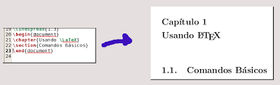

El otro día Roberto me señaló que quería hacer la memoria de título en LaTeX. Yo siempre he adorado las ventajas de LaTeX, así que me sumé a la idea. No fue muy difícil querer utilizar algo decente para escribir la memoria, he aprendido a utilizar OpenOffice.org bastante bien, pero en su gran mar de posibilidades, posee la misma debilidad de todas las suite ofimáticas, la poca flexibilidad.
Para variar, el reglamento del Departamento de Ing. Informática de la Usach (DIINF) posee unas pocas estándares medidas y formato. Todas las universidades gringas poseen una clase (que define formato) que se aplica a tu documento y queda perfectamente formateado para ser presentado (La mayoría es una variación de Book-Memoir o Article).
Acá en Chile, he pillado una clase de UDP y un template de la PUC. Fue esta necesidad que me hizo crear una clase para el formato del DIINF.
{kind=link}
Hasta ahora la clase provee:
- Margenes según reglamento
- El comando \maketitle que genera la portada necesaria
- El comando \maketitledos que genera la primera portada
- El comando \huge se ha redefinido para que entregue letra de tamaño 16pt.
Esta clase se basó en la clase book que viene junto a LaTeX.
Para la edición de documentos LaTeX existen muchas aplicaciones, algunas de ellas WYSIWYG. En mi caso no me gustó la versión WYSIWYG ya que era lo mismo que usar OOo y luego exportarlo a LaTeX. Me quedé con un plugin para GEdit.